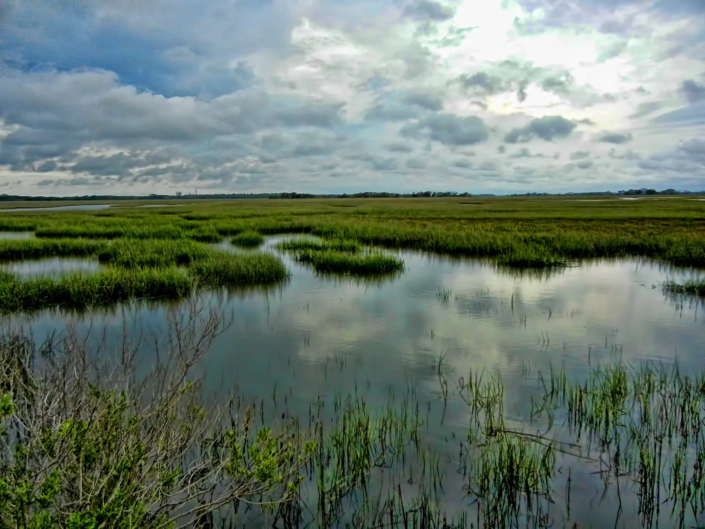

Evergreen Coniferous Forest
A terrestrial biome of spruce, fir and pine, built for cold, snow and fire.
Explore the forest →
Evergreen Coniferous Forest
A terrestrial biome of spruce, fir and pine, built for cold, snow and fire.
Explore the forest →

Estuarine Zone An aquatic life zone where rivers meet the sea, shaped by salt, tides and mud. Explore the estuary →Evergreen Coniferous Forest and Estuarine Zone
One land biome and one water life zone: their climate, soil, location, key organisms and adaptations, and how people are harming and helping them.
A terrestrial biome
Land ecosystems are grouped into biomes mainly by climate: temperature and precipitation decide which plants can grow, and the plants shape the animals. The evergreen coniferous forest is the biome of long, cold winters and short summers.
An aquatic life zone
Water ecosystems are grouped by the water itself: how salty, deep and moving it is. The estuarine zone is defined by mixing, where fresh river water meets salty ocean water and the tides push the boundary back and forth.
How they compare
Details and sources are on each ecosystem page.
| Feature | Coniferous forest | Estuarine zone |
|---|---|---|
| Type | Terrestrial biome | Aquatic life zone (brackish water) |
| Location | Northern belt, about 50° to 60° N | Coasts at every latitude, wherever rivers meet the sea |
| Main limiting factor | Cold: frozen soil and a short growing season | Salt: salinity that changes with every tide |
| Soil or bottom | Acidic, nutrient-poor podzols | Nutrient-rich mud and peat with little oxygen |
| Producers | Black spruce, lodgepole pine | Smooth cordgrass, phytoplankton |
| Productivity | Low; decomposition is slow | Very high; one of the most fertile ecosystems |
| Adaptation themes | Cold, snow and fire: needles, snowshoe feet, hibernation, fire-opened cones | Salt, tides and low oxygen: salt glands, air channels, closing shells, tide-timed behavior |
| Biggest threats | Logging, climate change and wildfire | Fertilizer runoff and dead zones, development, sea-level rise |